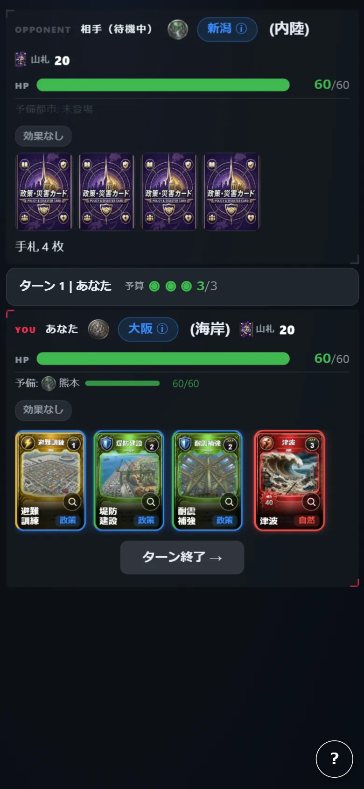
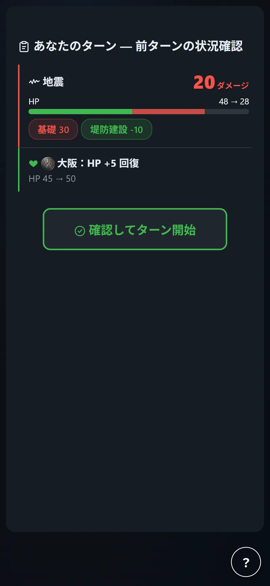
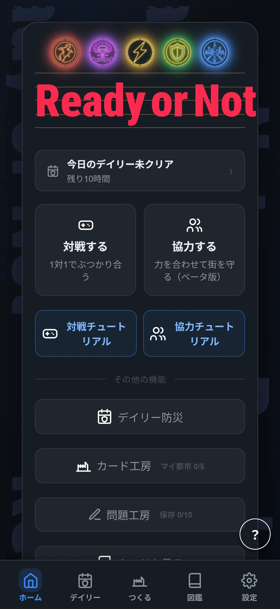
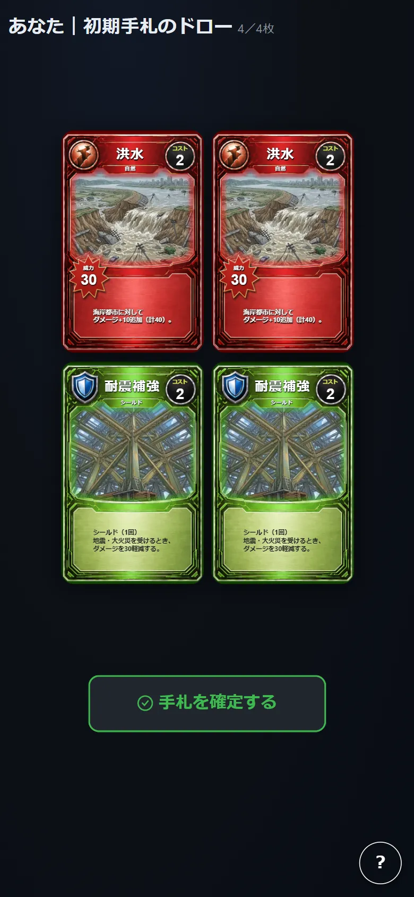

ひとりで練習
CPU対戦。難易度はEASY・NORMAL・HARDから選べる。
守りながら、攻める。
対戦 ／ 1〜2人 ／ 3〜5分
毎ターン攻守を入れ替えで行い、防災と災害をサクッと体験しながら学べる。始めるならまずはこれがオススメ。


手札上限5枚との差分（最大2枚）を補充する。
予算の範囲でカードを使う。複数枚まとめて使ってもよい。

自然災害カードを使われた相手は、政策カード1枚をコスト無料で使い被害を減らせる。

結果を確認し、相手のターンへ交代する。
リスク ＝ ハザード × 曝露 × 脆弱性
3つが重なったところだけが、実際の被害になる。VERSUSでは、この3項すべてを自分ひとりで動かす。
地震・津波・洪水・台風・大火災・土砂崩れ・複合災害。公害・テロ攻撃・デマ拡散。どれが来るかは選べない。
津波は海岸都市に、土砂崩れは山間都市に追加被害を与える。神戸＝海岸、東京＝内陸という属性そのものが被害量を変える。
耐震補強や堤防建設は構造的脆弱性を下げる。避難訓練や相互支援協定は社会的脆弱性を下げる。デマ拡散は逆に脆弱性を増やす。
対局の初めに、12都市からガチャで2都市を引き、手札を4枚引く。
都市は1枚ごとに地形が決まっている。海岸・内陸・山間部のどれかで、同じ災害でも受ける重さが変わる。さらに都市ごとに固有能力を持っている。
あとは毎ターン、予算の範囲でどのカードを切るかを決めるだけである。緑・黄・赤・紫。手札のこの4色が、そのまま選択肢になる。
攻守は毎ターン入れ替わる。守りながら攻める判断を、1人で全部持つことになる。覚えることが少なく1試合3〜5分で終わるので、防災を知らない人が最初に触るならこちらである。
CPU対戦。難易度はEASY・NORMAL・HARDから選べる。

部屋を作ってコードを発行するか、コードで部屋に参加する。

12都市からガチャで2都市を引く。地形と固有能力を確認して、先に出す都市を選ぶ。